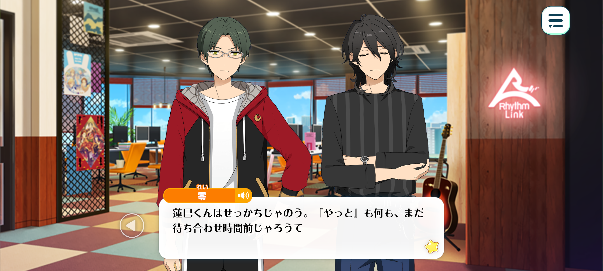
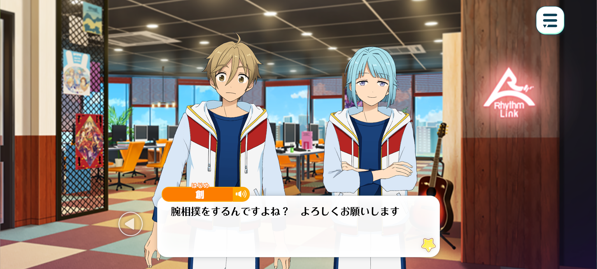
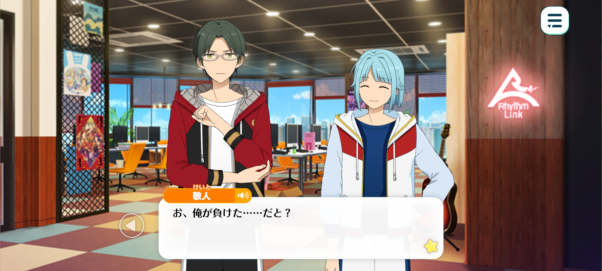
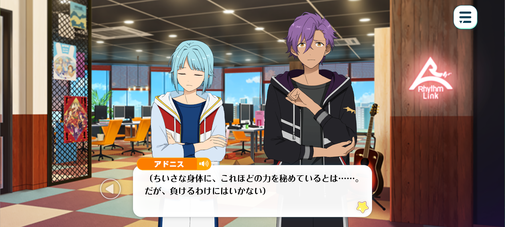
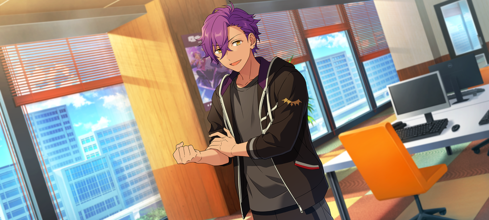
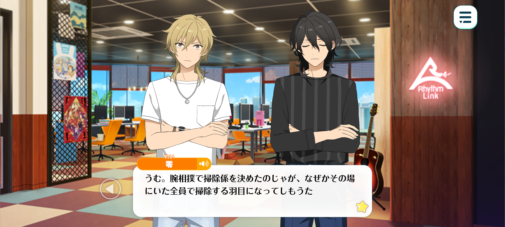

The Rhythm Link Championships: Arm Wrestling Tournament


Season: Summer
Location: The Rhythm Link Office Space

Keito: ...You've finally arrived. You're late, Sakuma.
Rei: My, how impatient. What do you mean, finally? I happen to have arrived before the agreed meeting time, I'll have you know.
Keito: It's best to get this sort of thing over with quickly. You've brought Otogari along so I trust you have explained the situation to him?
Rei: Of course I have. Isn't that right, Adonis-kun?
Adonis: Indeed. At Rhythm Link, a long-established agency, it's customary for newer idols to handle the cleaning. At present, Ra*bits have been taking the initiative and doing it themselves.
I've heard that you've decided to hold an arm-wrestling match to determine the cleaning rota fairly...
But why arm wrestling? Surely there are plenty of other ways to decide who's on the cleaning rota.
Rei: Well, even we can hardly remember how that idea came about.
Keito: At the time, Sakuma and I were both completely exhausted. Before we knew it, we'd somehow gotten ourselves worked up over the idea of having an arm-wrestling match.
Adonis: I see... I know you're both busy, but please remember to take care of yourselves.
Without sufficient food and sleep, your bodies will grow weak. You should eat plenty of meat to build up your strength.
Rei: In that case, shall we have a barbecue in the Hanging Garden sometime?
Keito: Don't. Even though it's within ES, it's still a public space.

Tomoya: Uwa, it looks like everyone's already here...! Sorry I'm late!
Hajime: We're having an arm-wrestling match, right? I look forward to competing with everyone!
Rei: Oh? Does that mean you're representing Ra*bits?
Hajime: Yes! Nii-chan couldn’t make it since he’s working, so I’ve come in his place ♪
Keito: Understood. Well then, now that everyone's here, shall we begin?
First, I'll explain the rules. I've already notified you through HoldHands, but I don't want there to be any misunderstandings.
One representative from each of the three units, AKATSUKI, UNDEAD, and Ra*bits, will compete in a round-robin arm-wrestling tournament. The unit that loses will be responsible for cleaning the agency's office.
I'll be representing AKATSUKI. Who will be representing UNDEAD?
Rei: Adonis-kun, of course! If we're going to compete, we might as well give it our all! ♪ Actually, are you quite sure you're the right person to represent AKATSUKI, Hasumi-kun? Wouldn't Kiryu-kun or Kanzaki-kun be better suited to the task?
Keito: If this were simply a test of strength, you'd be right. However, the agency's cleaning duties are at stake here. That's why I've decided that I, as the leader, should compete.
Rei: My, my. You're as serious as ever...
Is Mashiro-kun representing Ra*bits?
Tomoya: Oh, no! I'm just along for the ride…
Hajime: I'll be competing! Our first match is Ra*bits versus AKATSUKI, right? I'm looking forward to it, Hasumi-senpai!
Keito: Indeed. Well then... let the match begin!
Hajime: Hup!

Keito: I-I lost...? How could this be...?
Rei: Oh my, that was over in an instant! ♪ Hasumi-kun, did you misjudge how much strength to use?
Keito: No. In fact, I wasn't even caught off guard.
Tomoya: Ahaha. He may not look it, but he's actually pretty strong!
Adonis: Next is UNDEAD versus AKATSUKI. Are you up for it, Hasumi-senpai?
Keito: ...Yes. No matter how much I think it over, a loss is a loss.
The contest isn't over yet. I must accept my defeat, regain my composure and prepare for the next match.
Adonis: That's the spirit. Now then... let's begin!
Keito: Hngh!
Rei: Adonis-kun wins by a landslide! What a splendid performance! ♪
Keito: Guh... To think it would be decided so quickly…
Rei: Well, since Hasumi-kun has lost twice in a row, I believe that settles who's in charge of cleaning!
Hajime: That's right. But…
Otogari-senpai, since we have the chance, would you like a match against me?
Adonis: I don't mind. Though I'm a little worried I might hurt your hand.
Hajime: It's alright! I'm stronger than I look, you know. Let's have a fair and square match!
Adonis: Understood. In that case, I'll give you my all, too.
Now then... let’s fight!
Hajime: Nngh...!

Adonis: (To think he could have this much strength hidden in such a small body...! But I can't afford to lose.)
Hngh...!
Hajime: Fuah... I lost.
Fufu. Just as I thought, I really am no match for you, Otogari-senpai.
I'm disappointed that I lost, but... I'm happy you gave it your all against me. Thank you for the match!

Adonis: I should be thanking you. I was in awe with the way you took me on without hesitation. Let us have another match with someday.
Hajime: Yes, I'd love that...♪
Rei: My, my. This is beginning to feel like some sort of sports drama! Though, Hasumi-kun is still the one who's supposed to clean, so I think the rest of us can call it a day!
Adonis: ...No, we should help him, too. The office is far too large for one person to clean by themselves.
Hajime: That's right! If we all pitch in, we can make sure everything gets properly cleaned. What do you think, Tomoya-kun?
Tomoya: Sure, I'll help out. The agency's always been good to us, after all.
Adonis: Thank you. With five of us working together, we'll be finished in no time.
Rei: Five people...? Adonis-kun, did you just casually include me in that number?
Adonis: ? Aren't you going to join us, Sakuma-senpai?
Rei: Ugh... What a bother. But I suppose I have little choice. Very well, I'll help. You'd better be grateful, Hasumi-kun!
Time: 30 minutes later

Kaoru: Helloo everyone~
Huh? What's going on here? Are you having a big clean-up? I thought only one representative from each unit was supposed to handle it?
Rei: Indeed! We originally held an arm-wrestling tournament to decide who would be responsible for the cleaning, but somehow, we've all ended up doing it!
Koga: Arm wrestling, huh? Sounds like fun! Man, I should've joined in!
Adonis: Fufu. I had a feeling you'd say that, Oogami. We'll have to organise another tournament sometime.
If everyone participates instead of just the selected representatives, we can all get to know each other better while getting the agency cleaned at the same time.
Kaoru: That's what you'd call killing two birds with one stone, right? Though, I think I'll pass this time~. I can't imagine myself beating Adonis-kun.
Adonis: You just need to train hard and get stronger. Eat meat and work on building your body!
Kaoru: Ehh?! I don't want to go to all that trouble just for arm wrestling!
Adonis: Hard work and muscles never betray you. Let's get stronger together, Hakaze-senpai!